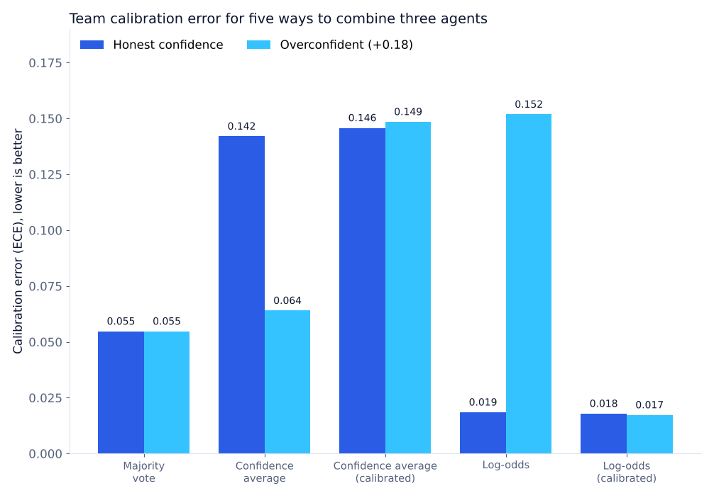

Experiment · Agentic AI · Synthetic benchmark
Averaging agents' confidence made the team less trustworthy
How you combine three agents' confidence matters more than how often they are right.
By Muzammal Hussain · 24 October 2026 · 5 min read
When several AI agents work as a team, each one can return an answer and a confidence score, such as "yes, 80% sure". The team then has to turn those into one decision and one confidence. That step sounds like simple arithmetic, but the rule you pick decides whether the team's final confidence can be trusted. I built a small simulator with three agents and compared five rules for combining them.
Key findings
- Averaging the agents' confidence gave the worst calibrated team: calibration error 0.142, against 0.055 for a plain majority vote.
- Adding up the evidence in log-odds was the best calibrated rule: 0.019, and 0.018 after a per-agent correction.
- When every agent overstated its confidence by 0.18, the log-odds rule's error jumped from 0.019 to 0.152. Correcting each agent first brought it back to 0.017.
- Accuracy hardly moved: between 71.7% and 73.6% for every rule. The rules differ in how honest the final confidence is, not in how often the team is right.
- These are simulated agents, not language models. No LLM was called.
What I did
I wrote a simulator in plain Python with three agents whose set skills are 80%, 70% and 62% on a yes/no task. Each of five random seeds creates 2,500 scenarios. For every scenario each agent gives an answer and a confidence. I ran everything twice: once with honest confidence, and once where every agent adds 0.18 to its confidence, a simple way to imitate an overconfident model.
40% of the scenarios were used to fit a correction for each agent (a small logistic model that maps reported confidence to how often that agent is really right). All results below come from the other 60%, which the correction never saw. The five rules were:
- Majority vote: two out of three wins; confidence is just the share of votes.
- Confidence average: weight each vote by the agent's confidence, raw or corrected.
- Log-odds: turn each confidence into odds and add them up, raw or corrected. This is the textbook answer if the agents' mistakes are independent.
I scored each rule on accuracy, Brier score (the average squared gap between confidence and what really happened) and expected calibration error, ECE (when the team says 80%, is it right about 80% of the time?). For both, lower is better.
Results

| Agents' confidence | Rule | Accuracy | Brier | ECE |
|---|---|---|---|---|
| Honest | Majority vote | 71.7% | 0.198 | 0.055 |
| Honest | Confidence average | 73.3% | 0.205 | 0.142 |
| Honest | Confidence average, corrected | 73.1% | 0.206 | 0.146 |
| Honest | Log-odds | 73.6% | 0.180 | 0.019 |
| Honest | Log-odds, corrected | 73.3% | 0.179 | 0.018 |
| Overconfident | Majority vote | 71.7% | 0.198 | 0.055 |
| Overconfident | Confidence average | 71.8% | 0.185 | 0.064 |
| Overconfident | Confidence average, corrected | 73.3% | 0.207 | 0.149 |
| Overconfident | Log-odds | 72.9% | 0.206 | 0.152 |
| Overconfident | Log-odds, corrected | 73.3% | 0.180 | 0.017 |
Each row is 7,500 held-out predictions (1,500 per seed). Across seeds the accuracy varies by about ±1.3 points, so the small accuracy differences are noise.
Two results that surprised me
Fixing each agent did not fix the team. In the overconfident run, the per-agent correction worked well on each agent: its calibration error fell from 0.180 to 0.023. But the corrected confidence average was still badly calibrated as a team (0.149). Only the log-odds rule turned well-calibrated agents into a well-calibrated team. A correction has to be checked at the level where the decision is made, not only agent by agent.
Overconfidence made the confidence average look better. Its error fell from 0.142 to 0.064 when the agents became overconfident. My reading is that averaging pulls the team's confidence towards 50% even when all three agents agree, and the extra 0.18 happened to cancel part of that. I have not yet checked the direction of the error in the reliability bins, so this explanation is a hypothesis. It is a good reminder that one number can look better for the wrong reason.
Limitations
The agents and the task are synthetic: no language, no tools, no real model outputs. There are only three agents and five seeds. The log-odds rule assumes the agents' mistakes are independent and that yes and no are equally likely; in real teams agents often share data, prompts and blind spots, and then this rule can become overconfident. ECE also depends on how the scores are grouped into bins and can hide problems in small subgroups.
What I will test next
- Agents that fail together, to see when the independence assumption breaks (the first step is in this follow-up).
- Unequal yes/no rates and decisions where one kind of mistake costs more than the other.
- Real confidence scores from local models such as qwen2.5:3b and llama3.1:8b on the same kind of task.
Version 0.3.0 of the benchmark. It uses only the Python standard library; the run produces 75,000 agent messages and 75,000 held-out predictions, with the CSV outputs, charts and tests in the GitHub repository. No DOI has been minted for this version.